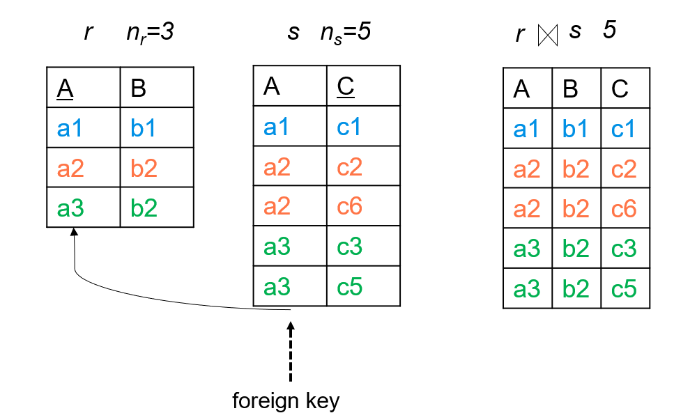
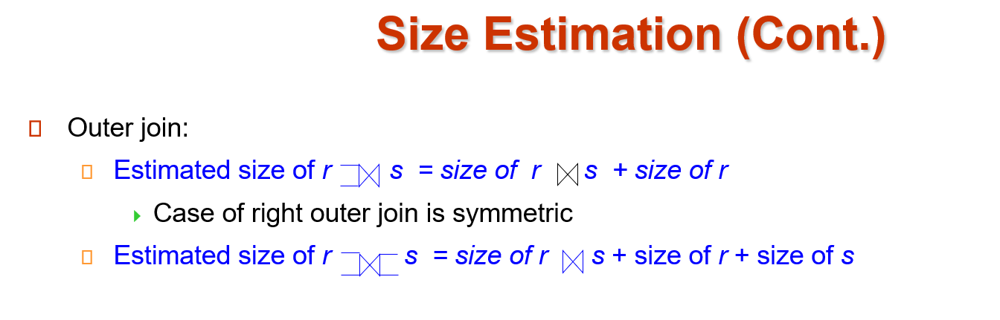

Chap 12: Query Optimization
约 2394 个字 8 行代码 26 张图片 预计阅读时间 24 分钟
Abstract
- Introduction
- Transformation of Relational Expressions
- Statistical Information for Cost Estimation
- Cost-based Optimization
- Dynamic Programming for Choosing Evaluation Plans
- Nested Subqueries
- Materialized Views
- Advanced Topics in Query Optimization
Introduction

Alternative ways of evaluating a given query
- Equivalent expressions
逻辑优化：关系代数表达式（尽量先做选择，投影） - Different algorithms for each operation
物理层面：每个算子选择不同的算法
Example


Estimation of plan cost based on:
- Statistical information about relations. Examples: number of tuples, number of distinct values for an attribute
- Statistics estimation for intermediate results（Cardinality Estimation）
to compute cost of complex expressions
估计中间结果的大小
现在有基于深度学习的估计方法 - Cost formulae for algorithms, computed using statistics
关系数据库里可以用查看执行计划。

Generating Equivalent Expressions
Two relational algebra expressions are said to be equivalent if the two expressions generate the same set of tuples on every legal database instance
形式上不一样，但是结果（输出）是一样的，产生了相同的集合。
Equivalence Rules
-
selection

- 可以把算子拆分
如果某些属性有索引，那么可以先拆分，在索引 select 之后再执行其他算子，否则不如不拆分。 - 算子可交换
先执行有索引的算子。 - 投影的属性可以只保留最后一次的
- 选择算子可以和合并结合
- 可以把算子拆分
-
join

自然连接是结合的（先连接中间结果小的）

如果选择算子只和一个关系有关，那么我们可以先执行选择
。 （选择算子要早进行，推到叶子上） -
projection

同理投影也要早做。
如果连接要用到投影后不保留的属性，我们在第一次投影时要把连接用的属性也保留下来。 -
set operation

这里的减法，减数关系就不用做选择了（减去多的总是没问题的）对交集也适用
-
other

Enumeration of Equivalent Expressions
- Repeat
- apply all applicable equivalence rules on every subexpression of every equivalent expression found so far
- add newly generated expressions to the set of equivalent expressions
- Until no new equivalent expressions are generated above
可以这样找到所有的等价表达式。
但是实际中我们基于一些经验规则进行启发式的优化
Statistics for Cost Estimation
代价估算需要统计信息
- \(n_r\): number of tuples in a relation r.
- \(b_r\): number of blocks containing tuples of r.
- \(l_r\): size of a tuple of r.
- \(f_r\): blocking factor of r — i.e., the number of tuples of r that fit into one block.
一个块可以放多少个元组 - \(V(A, r)\): number of distinct values that appear in r for attribute A; same as the size of \(\Pi(r)\).
- If tuples of r are stored together physically in a file, then: \(b_r = \lceil \dfrac{n_r}{f_r}\rceil\)
- Histograms
attribute age of relation person

Selection Size Estimation
中间结果
- \(\sigma_{A=v}(r)\)
\(n_r / V(A,r)\) : number of records that will satisfy the selection.
这样的估算基于值是平均分布的
如果要找的是一个 key, 那么 size estimate=1 - \(\sigma_{A\leq v}(r)\)
- Let \(c\) denote the estimated number of tuples satisfying the condition.
- \(c = 0\) if \(v < \min(A,r)\)
v 比属性 A 的最小值还要小 - \(c = n_r\cdot \dfrac{v-\min(A,r)}{\max(A,r) - \min(A,r)}\)
- In absence of statistical information c is assumed to be \(n_r / 2\) ( 没有最大、最小统计信息时 ).

概率论。
注意这些公式的要求是条件是相互独立的。
Joins
The Cartesian product \(r \times s\) contains \(n_r\cdot n_s\) tuples; each tuple occupies \(s_r + s_s\) bytes.
- \(R \cap S = \emptyset\)
没有公共属性，等价于 \(r\times s\) -
\(R \cap S\) is a key for \(R\), then a tuple of \(s\) will join with at most one tuple from \(r\)
Example

-
If \(R \cap S\) in S is a foreign key in S referencing R, then the number of tuples in \(r\bowtie s\) = the number of tuples in s.
Example

-
If \(R \cap S = \{A\}\) is not a key for R or S.
\(n_r * \dfrac{n_s}{V(A,s)}, n_s * \dfrac{n_r}{V(A,r)}\).
以第二个为例子，站在 s 的角度，每一个 s 可以和这么多个元素连接。
通常我们取二者中的较小值。
当然这里只是一种估算Example

Size Estimation for Other Operations

Size Estimation for Outer Join

外部连接 r, s 认为是 r s 自然连接的结果加上 r 的大小。
Estimation of Number of Distinct Values
估算 V(A,r).
Selections \(\sigma_\theta(r)\), estimate \(V(A,\sigma_\theta(r))\)
- If \(\theta\) forces A to take a specified value, \(V(A,\sigma_\theta(r))=1\)
- e.g., A = 3
- If \(\theta\) forces A to take on one of a specified set of values: \(V(A,\sigma_\theta(r))=\) number of specified values
- 选择条件 θ 要求 A 等于多个特定值之一 ( 如 A=1 ∨ A=3 ∨ A=4)
- e.g., (A = 1 V A = 3 V A = 4)
- If the selection condition \(\theta\) is of the form A op v, \(V(A,\sigma_\theta(r))=V(A,r)*s\)
- e.g.，选择条件是 A 与某个值的比较 ( 如 A>5, A≤10 等 )
- 利用选择率 s 计算
- In all the other cases, use approximate estimate: \(V(A,\sigma_\theta(r))=\min(V(A,r), n_{\sigma_\theta(r)})\)
- 不同值数量不会超过原始关系的不同值数量，也不会超过结果中的元组数量
- 取两者中较小的值作为保守估计
Example
joins \(r\bowtie s\), estimate \(V(A,r\bowtie s)\)
- If all attributes in A are from r, the estimated \(V(A,r\bowtie s)=\min(V(A,r), n_{r\bowtie s})\)
- If A contains attributes A1 from r and A2 from s, then estimated \(V(A,r\bowtie s)=\min(V(A1,r)*V(A2-A1,s), V(A1-A2,r)*V(A2,s), n_{r\bowtie s})\)
Choice of Evaluation Plans
Must consider the interaction of evaluation techniques when choosing evaluation plans
choosing the cheapest algorithm for each operation independently may not yield best overall algorithm
e.g. merge-join may be costlier than hash-join, but may provide a sorted output which reduces the cost for an outer level aggregation.
Mergejoin 代价高，但是有个好处是 join 后是有次序的，对上层操作有利。
如果要找最优的执行计划，可能需要很长时间。通常按照经验规则。
我们主要考虑连接操作的优化。
Cost-Based Join-Order Selection
Consider finding the best join-order for \(r_1\bowtie r_2\bowtie \ldots r_n\).
There are \((2(n - 1))!/(n - 1)!\) different join orders for above expression.
Different Join Orders
实际上，通过使用卡塔兰数可以更精确地理解这一计算：
\(C_{n-1} = \frac{1}{n}\binom{2(n-1)}{n-1}\) 是第 \((n-1)\) 个卡塔兰数，表示可能的满（国际定义）二叉树结构数量
对于 \(n\) 个关系的连接顺序总数： \(T(n) = C_{n-1} \times n! = \frac{(2(n-1))!}{(n-1)! \cdot n}\)
其中：
- \(C_{n-1}\)：表示不同的连接树形结构的数量
- \(n!\)：表示关系在叶节点上的不同排列方式
- 结果等价于 \((2(n-1))!/(n-1)!\)，这是一个组合问题的解
Using dynamic programming, the least-cost join order for any subset of \(\{r_1, r_2, \ldots r_n\}\) is computed only once and stored for future use.
Join Order Optimization Algorithm

先分解成两个小的集合 \(S_1, S-S_1\). 递归地细分。
递归到最底层就变为了对单个表的选择方法。

Left Deep Join Trees
In left-deep join trees, the right-hand-side input for each join is a relation, not the result of an intermediate join.

左边可以是中间结果，右边必须是一个关系。
Left-deep trees 只是所有可能连接树的一个子集，可能错过某些更优的 bushy join plans，导致无法找到全局最优的连接顺序
但这是数据库系统在优化效率和执行效率之间做出的权衡。
Cost of Optimization
- With dynamic programming
- time complexity of optimization with bushy trees is \(O(3^n)\).
- Space complexity is \(O(2^n)\)
- left-deep join tree
- Time complexity of finding best join order is \(O(n 2^n)\)
- Space complexity remains at \(O(2^n)\)
Heuristic Optimization
Cost-based optimization is expensive.
可以用启发式优化
Heuristic optimization transforms the query-tree by using a set of rules that typically (but not in all cases) improve execution performance:
- Perform selection early (reduces the number of tuples)
- Perform projection early (reduces the number of attributes)
- Perform most restrictive selection and join operations (i.e. with smallest result size) before other similar operations.
- Perform left-deep join order
Additional Optimization Techniques
Nested Subqueries
Nested query example:
select name from instructor
where exists
(select * from teaches
where instructor.ID = teaches.ID and teaches.year = 2022)
两重循环，但是低效。
Parameters are variables from outer level query that are used in the nested subquery; such variables are called correlation variables（相关变量）
即来自外循环的变量。如果没有相关变量，我们可以先执行内部，然后再执行外部。
把刚刚那个例子改为一个 select 语句，例如：
转换为关系代数相当于
\(\Pi_{name}(instructor \bowtie_{instructor.ID=teaches.ID \wedge teaches.year=2022} teaches)\)
那么一个老师如果开了很多门课就会出现很多个重复的名字。但是加上 distinct 关键词后又无法区分同名情况。我们通过采取半连接(semijoin) 来解决这个问题。
半连接 \(r ⋉_\theta s\)，检验 r 是否满足某个关系。
If a tuple \(r_i\) appears n times in r, it appears n times in the result of \(r ⋉_\theta s\) , if there is at least one tuple \(s_i\) in s matching with \(r_i\).
Example


The process of replacing a nested query by a query with a join/semijoin (possibly with a temporary relation) is called decorrelation( 去除相关 )
Decorrelation of scalar aggregate subqueries can be done using groupby/aggregation in some cases
Example

Materialized Views
A materialized view is a view whose contents are computed and stored.
有些数据库里把 view 实例化了，真正存储在内部的临时表。
create view department_total_salary(dept_name, total_salary)
as select dept_name, sum(salary) from instructor group by dept_name
Saves the effort of finding multiple tuples and adding up their amounts.
但是需要时刻保持这个视图和原表一致。
use incremental view maintenance( 增量视图维护 )
The changes (inserts and deletes) to a relation or expressions are referred to as its differential( 差分 )
-
join: \(V^{new}=V^{old}\cup (i_r\bowtie s), V^{new} = V^{old}-(d_r\bowtie s)\)
join

-
select: \(V^{new}=V^{old}\cup \sigma_\theta(i_r), V^{new} = V^{old}-\sigma_\theta(d_r)\)
-
projection:
For each tuple in a projection \(\Pi_A(r)\), we will keep a count of how many times it was derived.- On insert of a tuple to r, if the resultant tuple is already in \(\Pi_A(r)\) we increment its count, else we add a new tuple with count = 1
- On delete of a tuple from r, we decrement the count of the corresponding tuple in \(\Pi_A(r)\) if the count becomes 0, we delete the tuple from \(\Pi_A(r)\)
Projection

-
count \(v= _{A}g_{count(B)}\)
- insert: For each tuple r in \(i_r\), if the corresponding group is already present in v, we increment its count, else we add a new tuple with count = 1
- delete: for each tuple t in \(i_r\).we look for the group t.A in v, and subtract 1 from the count for the group.
If the count becomes 0, we delete from v the tuple for the group t.A
-
sum \(v= _{A}g_{sum(B)}\)
- min, max
怎么利用这些 view?
-
Rewriting queries to use materialized views:
Example

-
Replacing a use of a materialized view by the view definition
Materialized View Selection
有哪些查询？各种查询的比例？